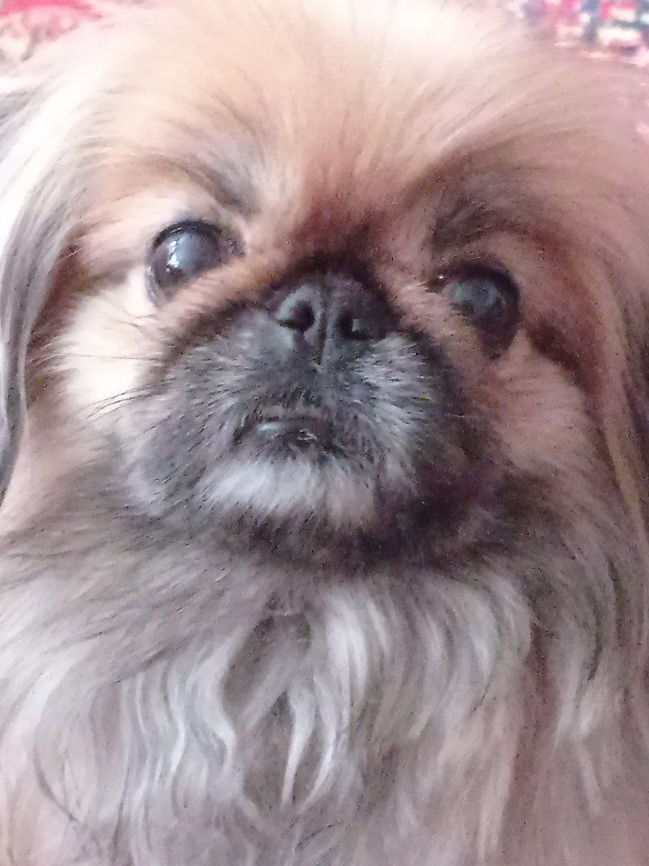
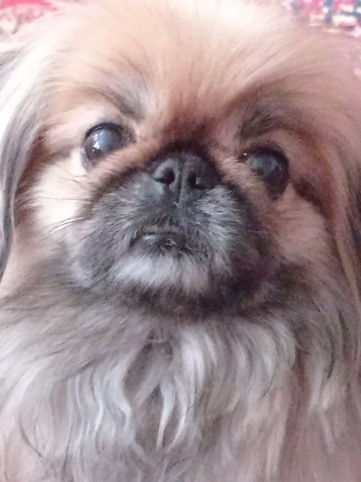
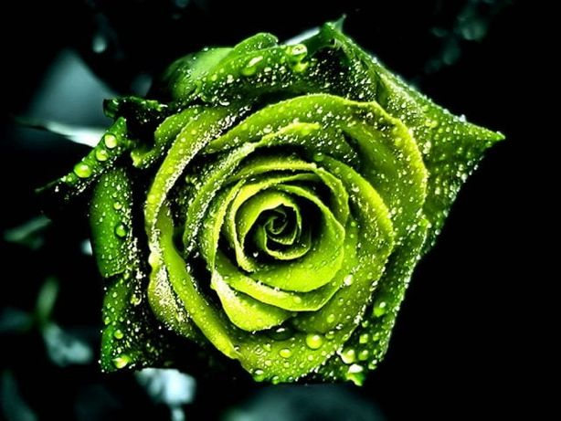
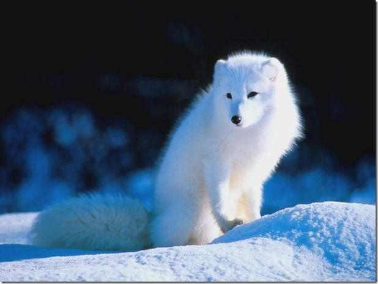
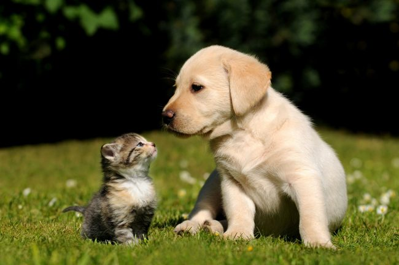
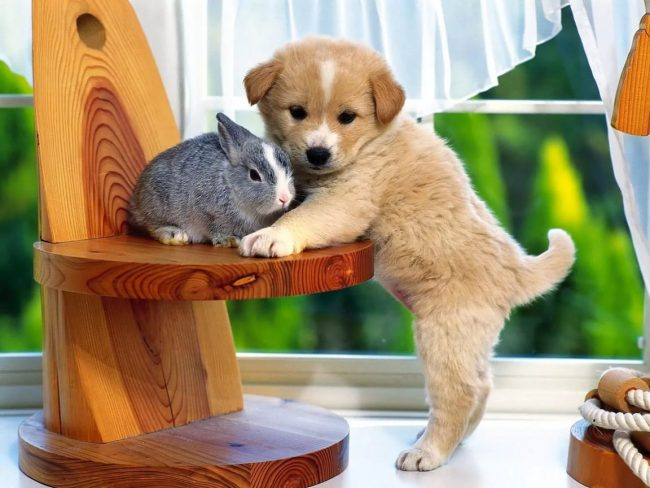
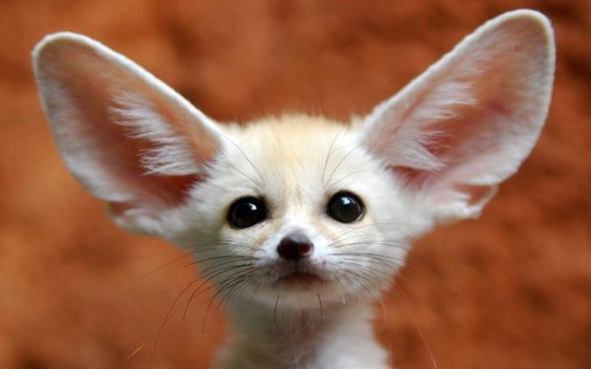
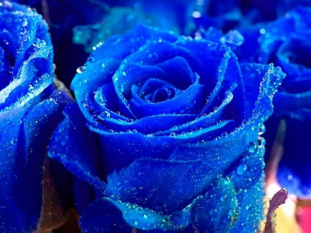
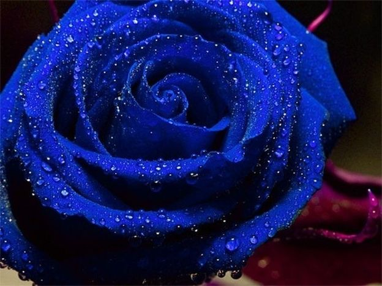

Это самый умный,добрый,красивый пёсик.Он наполняет нашу жизнь изо дня в день радостью и счастьем.Родился он без хвоста и это подчёркивает его индивидуальность.У Тима есть такие особенности,что он очень разборчив в еде и кушает не из миски,а садится на ковёр и неторопясь по кусочку кушает.Немного обидчив и скромен.Спит на кровати под одеялом,а голова на подушке.Была у него и так сказать жена и несколько окутов.Кутята красивые и милые.Сейчас ему 7лет.Надеемся на то,что он будет радовать нас долгие годы.
Привет,меня зовут Людмила!
Кто такой Тим.
.png)
.png) 

Немного о пекинесах.
Дату зарождения породы невозможно определить даже приблизительно.Поэтому происхождение пекинесов обросло легендами.Одна из легенд из истории породы гласит:"принц влюбился в простую девушку,но её красота пленила также злого волшебника.Когда красавица отвергла притязания колдуна,он превратил её в цветок лотоса,а принца в белку.Однако их любовь не исчезла.Белка трепетно ухаживала за цветком.Увидев это,Будда сжалился и благословил влюблённых." Плодом любви стал Пекинес,пушистый хвост которого напоминает беличий,а характер и телосложение-нежность и хрупкость лотоса.В 17веке император Китая назначил пекинесов священным символом страны.Каждая собачка во дворце имела собственный лакированный столик и всюду сопровождали хозяев.Даже в загробный мир. Простолюдинам под страхом смертной казни запрещалось их содержать.Буддийские монахи зачастую нарушали этот приказ и тайком заводили представителей породы в монастырях.
Моё отношение к животным.
Меня животные радуют,они приносят счастье в дом и доброту в наши сердца.
      